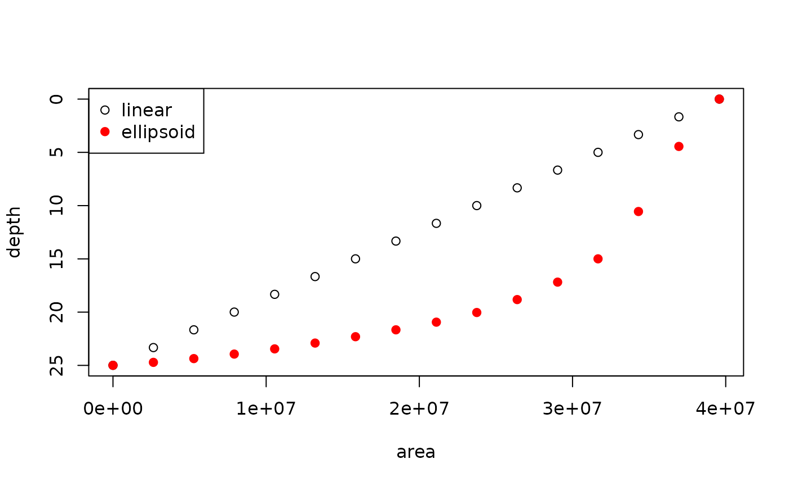

Generating Hypsography
Joseph Stachelek
2017-06-19
Introduction
The General Lake Model (GLM) requires information on the depth-area relationship for a given lake. In GLM this is referred to as hypsography (rather than bathymetry) and has the following description in the glmtools documentation for get_hypsography:
| get_hypsography | R Documentation |
retrieve hypsography information
Description
Retrieves hypsography information from glm_nml object or file.
Hypsography is the relationship between depth and area of a lake. ‘Depth’ is referenced from the lake surface and downward values are positive in meters. Areas are in square meters.
Example
Let’s start by investigating (reverse-engineering) the hypsography provided for Sparkling Lake (Wisconsin) in the run_example_sim function.
sim_folder <- run_example_sim("inst/extdata", verbose = FALSE)
nml_file <- file.path("inst/extdata", "glm2.nml")nml <- read_nml(nml_file)
hp <- get_hypsography(file = nml_file)[,2:1]Calculate volume from hypsographic profile
hp_diff <- cbind(c(diff(hp$depths), 0), hp$areas)
calc_layer_vol <- function(hp_diff, i){
top_area <- hp_diff[i, 1]
bot_area <- hp_diff[i + 1, 2]
# volume of a layer approximated as a truncated cone
(hp_diff[i, 1] / 3) * (top_area + bot_area + sqrt(top_area * bot_area))
}
vol_layers <- sapply(seq_len(nrow(hp_diff) - 1),
function(i) calc_layer_vol(hp_diff, i))
(vol_estimated <- sum(vol_layers))## [1] 1808205Approximate hypsographic profile from max depth and surface area
nlayers <- 14
max_depth <- 18.288000
surface_area <- 637641.6
res <- suppressWarnings(
glmutils::generate_hypsography(nlayers, max_depth, surface_area))
plot(res[,c("area", "depth_linear")],
ylim = c(max(res$depth_linear), min(res$depth_linear)),
ylab = "depth")
points(res[,c("area", "depth_ellipsoid")], col = "red", pch = 19)
legend("topleft", legend = c("linear", "ellipsoid"), col = c("black", "red"),
pch = c(21, 19))
Verify max depth
# Get max depth
tail(hp, 1)| areas | depths | |
|---|---|---|
| 15 | 0 | 18.288 |
This value matches the max depth reported by the Wisconsin DNR.
Verify dimensions
nml <- read_nml(nml_file)
get_nml_value(nml, "bsn_len")## [1] 21000get_nml_value(nml, "bsn_wid")## [1] 13000library(nhdR)
# Get NHD Waterbody Polygons
# nhd_plus_get(vpu = 7, "NHDSnapshot")
dt <- nhd_plus_load(vpu = 7, "NHDSnapshot", "NHDWaterbody")## Reading layer `NHDWaterbody' from data source `/home/jose/.local/share/nhdR/NHDPlus/MS_07_NHDSnapshot/NHDWaterbody.shp' using driver `ESRI Shapefile'
## Simple feature collection with 42186 features and 12 fields
## geometry type: POLYGON
## dimension: XYZ
## bbox: xmin: -97.35526 ymin: 36.95421 xmax: -86.10545 ymax: 47.79477
## epsg (SRID): 4269
## proj4string: +proj=longlat +datum=NAD83 +no_defsspark_outline <- dt[grep("Sparkling", dt$GNIS_NAME),]
plot(spark_outline$geometry, main = "Sparkling Lake")
suppressPackageStartupMessages(library(lakemorpho))
library(raster)
# Get length and width
spark_outline_sp <- as(spark_outline, "Spatial")
r <- rasterize(spark_outline_sp, raster(spark_outline_sp))
spark_outline_sp <- spTransform(spark_outline_sp, CRS("+proj=utm +zone=10 +datum=WGS84"))
r <- projectRaster(r, crs = "+proj=utm +zone=10 +datum=WGS84")
spark_lm <- lakeSurroundTopo(spark_outline_sp, r)
calcLakeMetrics(spark_lm, bearing = 45, pointDens = 250)## $surfaceArea
## [1] 747669.2
##
## $shorelineLength
## [1] 3957.708
##
## $shorelineDevelopment
## [1] 1.291172
##
## $maxDepth
## [1] NA
##
## $volume
## [1] 347870.8
##
## $meanDepth
## [1] 0
##
## $maxLength
## [1] 1558.539
##
## $maxWidth
## [1] 642.285
##
## $meanWidth
## [1] 479.7244
##
## $fetch
## [1] 825.6261